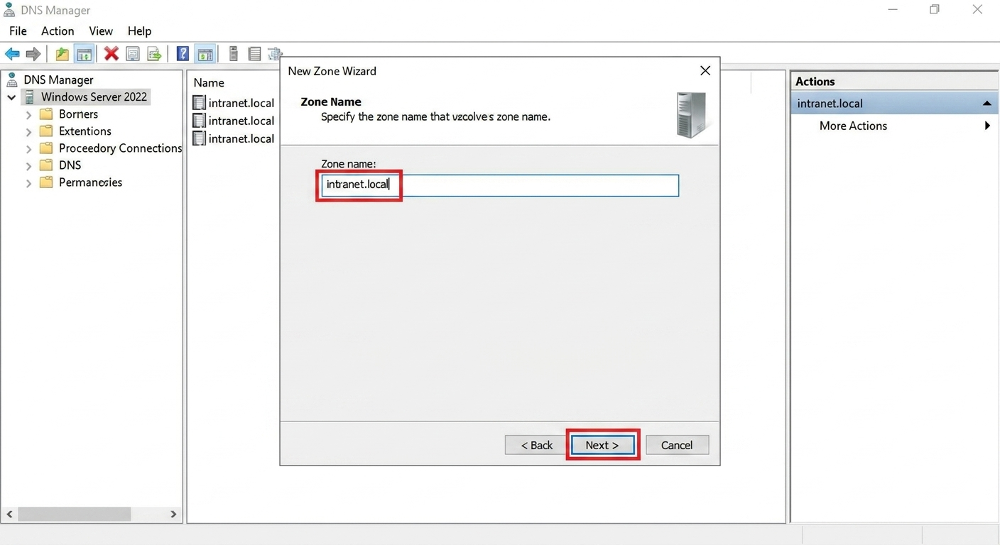
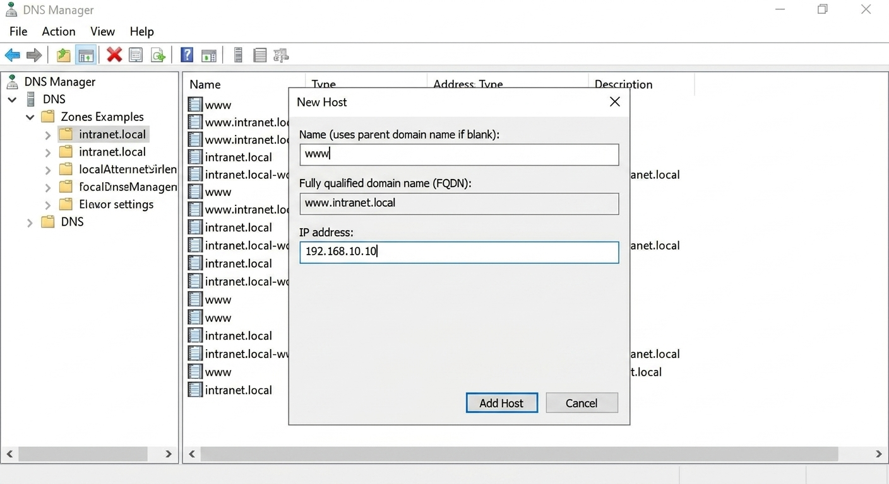
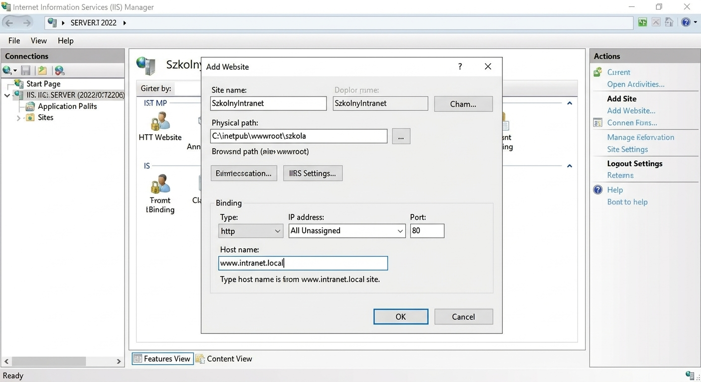

Lab 4: Szkolny Intranet (DNS i IIS)
Czas: 60 min(DNS & IIS)
-
Krok 1: Instalacja ról
Server Manager (Menedżer serwera) ➔ Add roles and features (Dodaj role i funkcje) ➔ DNS Server (Serwer DNS) & Web Server (IIS) (Serwer sieci Web (IIS))
-
Krok 2: Konfiguracja DNS (Strefa i Rekordy)
DNS Manager (Menedżer DNS) ➔ Forward Lookup Zones (Strefy wyszukiwania do przodu) ➔ New Zone (Nowa strefa)
Utwórz nową strefę podstawową (Primary Zone) o nazwie
intranet.local.
Wejdź we właściwości nowej strefy (zakładka SOA) i zmień Refresh interval (Interwał odświeżania) na 10 minut (wymóg egzaminacyjny).
Następnie kliknij prawym na strefę i utwórz New Host (A) (Nowy rekord hosta A). Wpisz nazwę
wwwi podaj adres IP Twojego serwera (np.192.168.10.10).
Zobacz oryginalne zadanie z egzaminu
Egzamin: Styczeń 2024 (INF.02-01-24.01-SG)
Arkusz: Pobierz PDF
Zadanie: 7. Skonfiguruj serwer z zainstalowanym systemem Windows: (...)
Treść zadania:
‒ zainstaluj usługę DNS i skonfiguruj ją zgodnie z zaleceniami:
‒ utworzona strefa wyszukiwania do przodu o nazwie: pracownia.local
‒ skonfigurowane właściwości strefy:
‒ interwał odświeżania: 10 minut
‒ interwał ponawiania prób: 5 minut
‒ wygasanie po: 12 godzinach -
Krok 3: Konfiguracja IIS (Host Headers / Wiązania)
Najpierw przygotuj treść. Utwórz folder
C:\inetpub\wwwroot\szkolai stwórz w nim prosty plikindex.htmlz napisem "Witaj w szkole".IIS Manager (Menedżer IIS) ➔ Sites (Witryny) ➔ Add Website (Dodaj witrynę sieci Web)Wpisz nazwę witryny (np. SzkolnyIntranet) i wskaż ścieżkę fizyczną do utworzonego folderu.
Kluczowy moment: W sekcji Bindings (Wiązania) wpisz w polu Host name (Nazwa hosta):
www.intranet.local. Dzięki temu serwer będzie wiedział, którą stronę pokazać, gdy ktoś wpisze ten konkretny adres.
Zobacz oryginalne zadanie z egzaminu
Egzamin: Czerwiec 2024 (INF.02-01-24.06-SG)
Arkusz: Pobierz PDF
Zadanie: 7. Skonfiguruj serwer z zainstalowanym systemem Windows: (...)
Treść zadania:
‒ dodaj i skonfiguruj witrynę internetową:
‒ nazwa witryny: strona_testowa
‒ ścieżka do plików strony: C:\www
‒ powiązanie tylko z protokołem HTTP, interfejsem sieciowym LAN 1 na porcie 80 i nazwą hosta www.egzamin.local
‒ dokument domyślny: strona_testowa.html
ping www.intranet.local. Jeśli
ping nie rozwiązuje nazwy na IP serwera, to strona na pewno nie zadziała. Zawsze najpierw
naprawiaj DNS!
C:\inetpub\wwwroot\szkola (np. bawiąc się dziedziczeniem z
poprzedniego labu), serwer IIS nie będzie mógł odczytać pliku index.html. IIS
używa specjalnej grupy lokalnej IIS_IUSRS do czytania plików. Nie usuwaj jej
uprawnień!
🙋♂️ Weryfikacja Egzaminacyjna (Podniesienie ręki)
W zadaniach z IIS i DNS egzaminator zazwyczaj chce zobaczyć efekt końcowy na żywo:
- Otwórz przeglądarkę na stacji roboczej (Windows 10).
- Wpisz w pasku adresu:
http://www.intranet.local. - Gdy strona się załaduje, podnieś rękę. Egzaminator podejdzie i sprawdzi, czy strona ładuje się po nazwie domenowej, a nie po samym adresie IP.